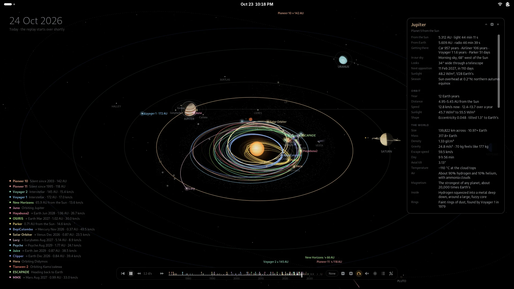
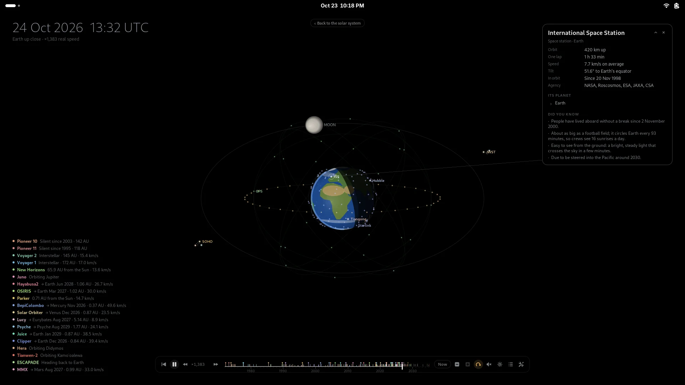
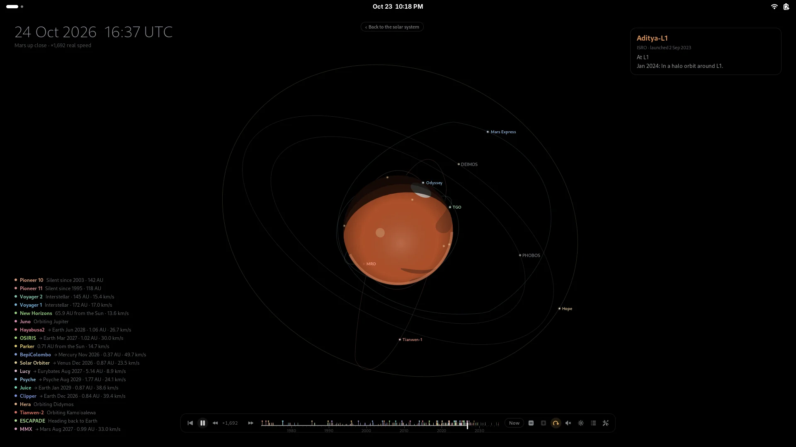
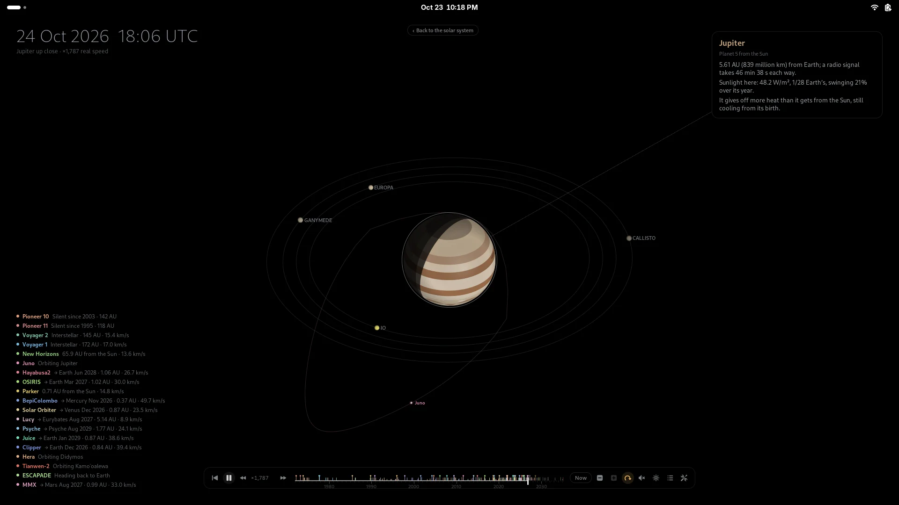
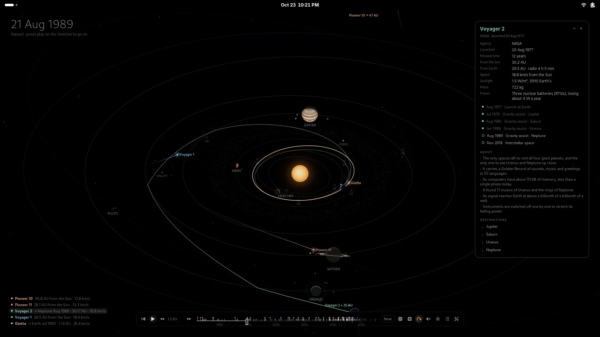
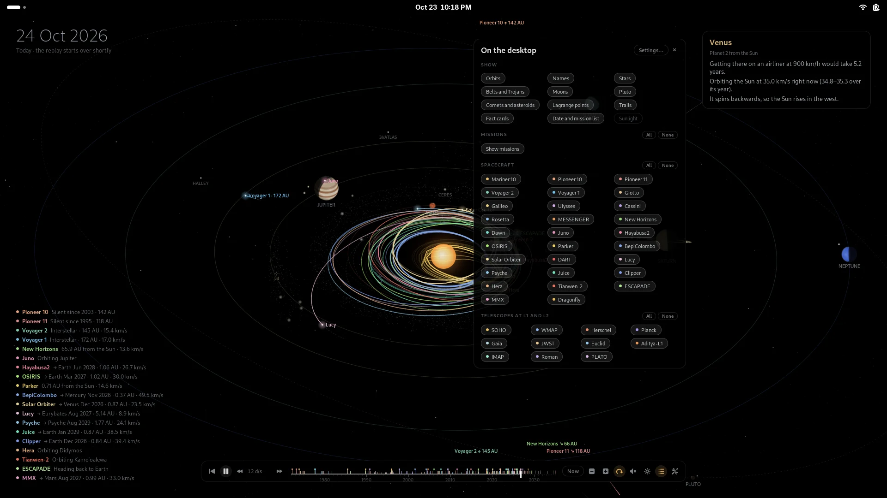
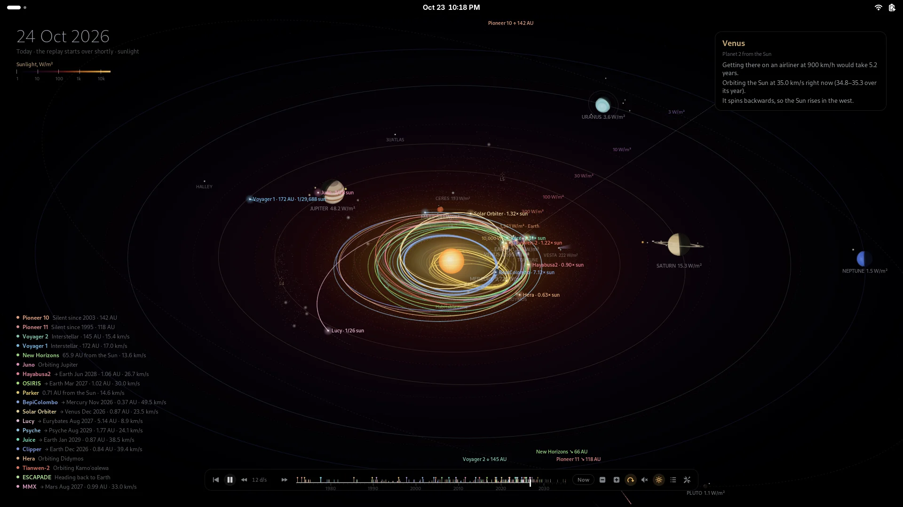
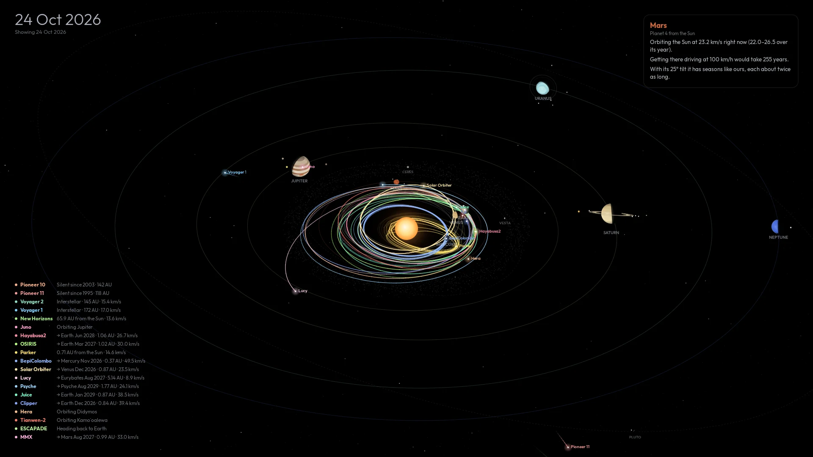

orrery.
The solar system, live on your desktop: every planet where it really is, and the spacecraft of the space age flying the paths they really flew.
Click a planet for its story, fly in to its moons and satellites, scrub through sixty years of missions, or pull back past the Voyagers to the Oort cloud. All of it in pure black for OLED screens. A GNOME Shell extension, with a companion for KDE, XFCE, Cinnamon, Sway, Hyprland and more.
2025 at sixty days a second, recorded from the extension in GNOME Shell. The planets spin at their true relative speeds; a card pops up at every launch, flyby and arrival.
What it is
A real orrery, where your wallpaper was
An orrery is the old clockwork model of the solar system. This one runs on real astronomy. The planets follow NASA JPL's orbits and turn the way they really face, so Earth's day side is the right one for the time on screen. The moons sit where they really are. Every spacecraft follows a path fitted to JPL's record of where it went, and the missions still to come fly the routes they are planned to.
- Live shows the sky right now; Replay runs the space age from 1972.
- Point at anything to trace its orbit; click it for a card of live facts.
- Distances are squeezed so Mercury and Neptune share one screen; the camera, scale and zoom are yours.

Main features
Everything up there, and the story of it
Real positions
JPL's orbital elements put each planet where it was, or is. Uranus rolls on its side; Saturn's rings tilt as they really do.
100+ spacecraft
Mariner 2 to Dragonfly, Apollo to Artemis II, on paths checked against JPL Horizons. Cards mark each flyby and landing.
Moons, comets, more
22 moons, Ceres and Vesta, Halley and interstellar 3I/ATLAS, the Lagrange points and Jupiter's Trojans.
Fly in to a planet
Double-click a planet for its moons where they really are, its satellites and orbiters, and the rovers on its surface.
Pull back to the stars
Past the heliopause and the Oort cloud to Alpha Centauri, with the Voyagers' paths marked to 40,000 AD.
Cards that tell the story
Where it is in your sky, its next opposition, season, gravity, air, who found it, who visited, and trivia.
A timeline
Drag through sixty years; click a tick to jump to an event; click the playhead to pause. Top or bottom, center or corner.
Sunlight view
The plane of the planets colored by how much sunlight falls there, with the habitable zone. It can follow your charger.
Space music
A calm ambient piece made up as it plays, or your own folder of music, from a button on the timeline.
Mission stories
Follow one spacecraft from launch to the end, flying in at every planet it passes, or let a tour play while you're away.
Show and hide
A panel of chips on the timeline: orbits, names, moons, trails, and every mission one by one or all at once.
Kind to OLED and battery
Pure black, pixel shift, dimming when idle, pausing behind windows, slower on battery. Nothing runs that cannot be seen.
Up close
Fly in to a planet
Double-click a planet, scroll the wheel over it, or press the zoom button on its card. Near the planet the scale is true, so the space station skims the surface; farther out it turns logarithmic, so the Moon and the telescopes at L2 still fit.



Time runs at the planet's own pace up close, a thousand-odd times real speed, with the clock in UTC. Pause it and the moons keep circling.
From afar
Out to the Oort cloud
Scroll down on the desktop to pull back: past Neptune and the Kuiper belt, through the termination shock and the heliopause, out past a light-day, a light-month and a light-year, through the Oort cloud's trillions of comets to Alpha Centauri.
The Voyagers, the Pioneers and New Horizons fly out along dashed paths marked with the years they get there, to 40,000 AD. The timeline stretches to the year 2500, in years per second: watch Voyager 1 reach the inner Oort cloud around 2300.
The missions
Sixty years of exploring, and what comes next
Each path joins the real positions of the worlds on the real dates of its encounters, and where a craft fired its engines on the way, waypoints from NASA JPL's Horizons keep it on the path it really flew. Dates after today are the published plans.
The space age
Flying now, and next
Telescopes at L1 and L2

Every encounter, one click away
A spacecraft's card lists its launches, flybys and arrivals; click one and the timeline jumps there. Here is Voyager 2 a few days before Neptune, in August 1989, on the only visit any spacecraft has made to it.
Every path is checked against JPL's real trajectory, month by month: most stay within a few percent of the distance from the Sun.
Everywhere on the desktop
In the overview, the panel and your ears
Open Activities and the workspaces show the solar system, still moving, with the app grid over a dimmed copy of it. The timeline's buttons pause and play, change the speed and play the music, and open a panel for the modes, the spin, what to show and the settings.


Install
GNOME 48 to 51, on any distribution
From the latest release. Then log out and back in and turn on Orrery in Extensions.
Fedora, RHEL, openSUSE
$ sudo dnf install https://github.com/fqazzazee/orrery/releases/download/v1.4.0/gnome-shell-extension-orrery-1.4.0-1.noarch.rpmDebian 13+, Ubuntu 25.04+, Mint, Pop!_OS
$ curl -LO https://github.com/fqazzazee/orrery/releases/download/v1.4.0/gnome-shell-extension-orrery_1.4.0-1_all.deb $ sudo apt install ./gnome-shell-extension-orrery_1.4.0-1_all.deb
Arch, Manjaro, EndeavourOS
$ curl -LO https://github.com/fqazzazee/orrery/releases/download/v1.4.0/gnome-shell-extension-orrery-1.4.0-1-any.pkg.tar.zst $ sudo pacman -U gnome-shell-extension-orrery-1.4.0-1-any.pkg.tar.zst
Any distribution, just for you
$ curl -LO https://github.com/fqazzazee/orrery/releases/download/v1.4.0/orrery@fqazzazee.github.io.shell-extension.zip $ gnome-extensions install orrery@fqazzazee.github.io.shell-extension.zip
then, after logging back in
$ gnome-extensions enable orrery@fqazzazee.github.io
Not on GNOME? KDE, XFCE, Cinnamon, MATE, Sway, Hyprland…
Install orrery-wallpaper from the same release, in the same formats. It draws the
same solar system, without the clicking: as a wallpaper kept up to date with your desktop's
own tool, or as an animated background on Wayland compositors with layer-shell.
# the wallpaper, redrawn every 10 minutes $ systemctl --user enable --now orrery-wallpaper # or animated (Sway, Hyprland, niri, labwc, river…) $ systemctl --user enable --now orrery-wallpaper-live # or just one picture, of any date $ orrery-wallpaper render voyager.png --date 1989-08-25

FAQ
Questions people ask
How accurate is it?
The planets come from JPL's orbital elements, good from 1800 to 2050; the asteroids and comets from JPL's Small-Body Database; the moons' positions from JPL Horizons. Each spacecraft's path meets every planet on the real date, and is checked against JPL's record of where it really went. Distances on screen are squeezed so everything fits, and the planets are drawn far bigger than to scale.
Does it use a lot of power?
It is built not to. It stops when windows cover the desktop, the overview is closed or the screen is locked; it slows to a few frames a second when nothing moves; it dims and slows after a few idle minutes; and on battery it lowers the frame rate and stops the spin. Planets move without redrawing, and each layer only redraws when it changes by most of a pixel.
Will it burn in my OLED screen?
Everything fades to true black, so most of the screen stays off. Pixel shift drifts the scene by a few pixels over time, the date and lists are dim, and the timeline only lights up while you use it.
Which GNOME versions does it work on?
GNOME 48, 49, 50 and 51. Each is tested by running Orrery in a real GNOME Shell of that version, in a container: loading it, flying in, zooming out, opening the overview and turning it off and on again.
Can I still use desktop icons and the right-click menu?
The right-click menu works as usual. A desktop-icons extension draws a window over the whole desktop, which takes the clicks Orrery would get; the solar system still shows and moves, but you cannot click it.
Where is the music from?
It is made up as it plays: slow chords, a low drone and soft bells in long echoes, never quite the same twice. Or point it at a folder of your own music. It starts muted. The speaker steps it through muted, background only (it fades out behind windows) and continuous, and it stops when the screen locks.
It works on several monitors?
Yes. Each monitor gets a solar system of its own, or a copy of the main one, or keeps its wallpaper: your choice.